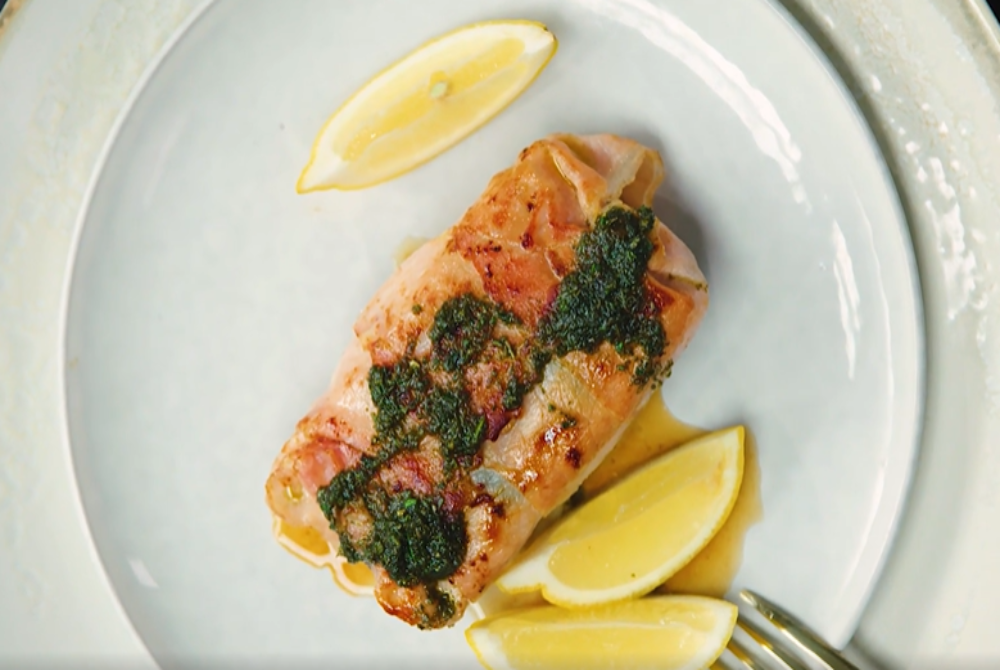
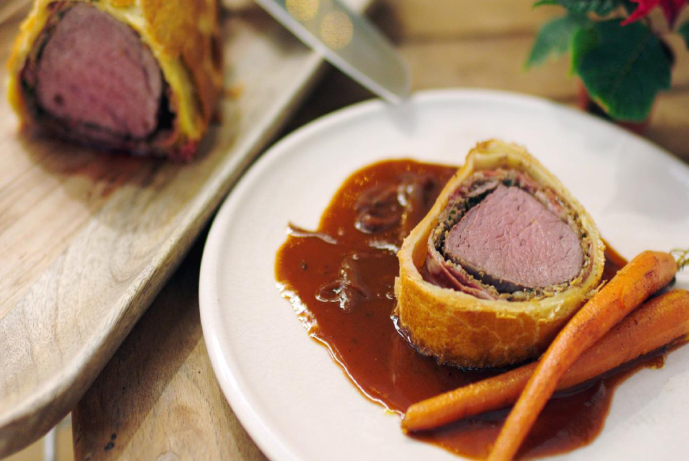

Recepten
Eenvoudige spaghetti bolognese
Elke Italiaanse nonna heeft haar eigen bologneserecept. Varieer er dus op los door bijvoorbeeld rode wijn toe te voegen aan je spaghetti bolognese.
Kabeljauwhaasje in bacon
Een kabeljauwhaasje in een knapperig bacon-jasje. Een heerlijk stukje kabeljouwhaasje ontwikkeld in bacon en daarna gefrituurd, een heerlijk gerechtje als middag lunch.
Côte de boeuf met zwarte knoflookboter
Deze côte de boeuf laat je een minuut of 15 rusten, daar wordt-ie alleen maar lekkerder van. De zachte, zoetige smaak van zwarte knoflook past er perfect bij.
Beef Wellington
Het laagje parmaham tussen de duxelles (paddenstoelenmengsel) en het bladerdeeg zorgt dat het deeg mooi droog blijft en goed gaart.





